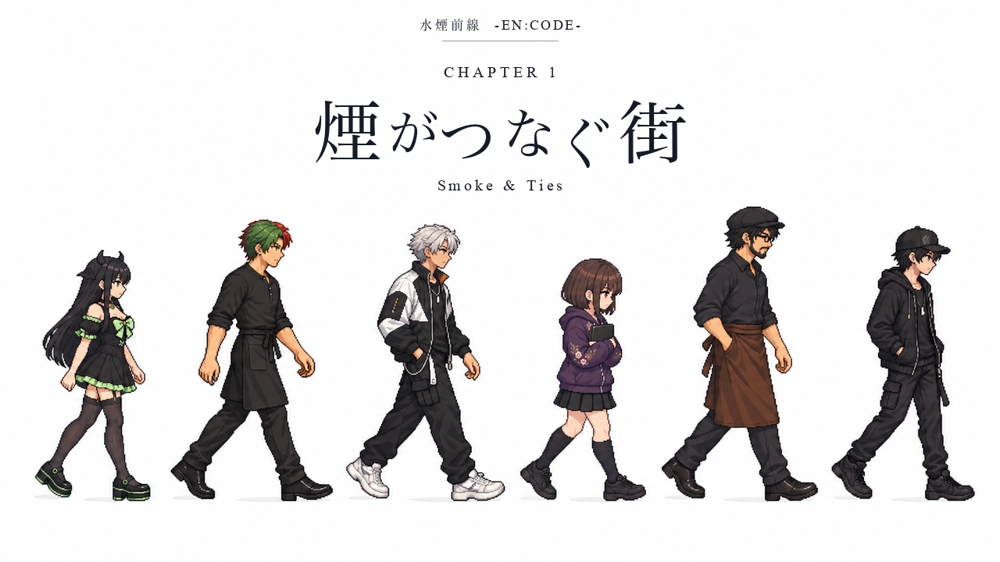
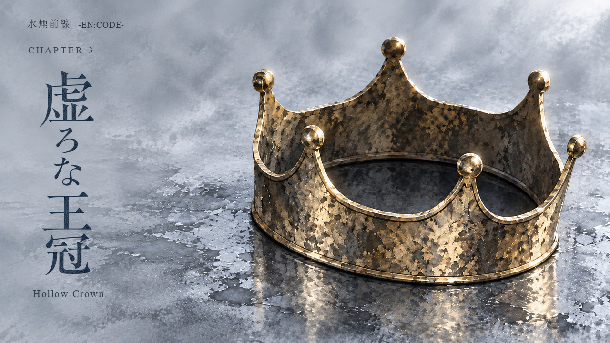
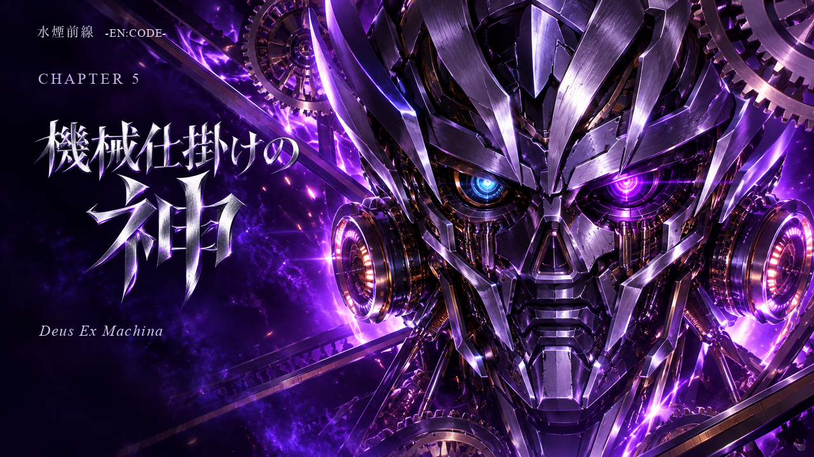

文字入り・現在の5章一覧
各章を1枚ずつ。画像をクリックすると原寸PNGを開きます。



1章は選定D、2章の絵は選定C。新しい文字は現在表示している代表案を使用しています。本編への差し替えは行っていません。
各章を1枚ずつ。画像をクリックすると原寸PNGを開きます。



1章は選定D、2章の絵は選定C。新しい文字は現在表示している代表案を使用しています。本編への差し替えは行っていません。